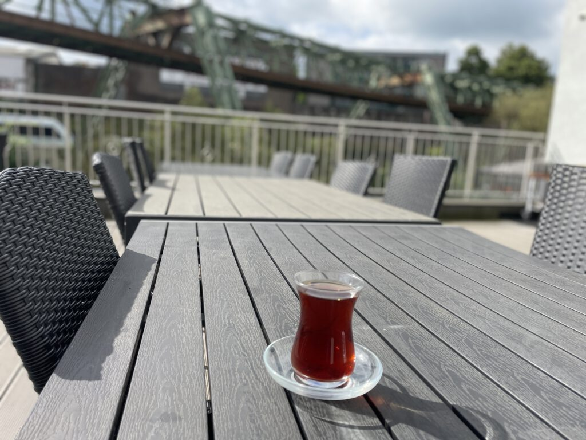

Neues aus dem Verein
Veranstaltungen, Nachbarschaftsfeste und offene Moscheeführungen – für alle, die mitmachen möchten.
Kommende Veranstaltungen

Herbstfest 2025
28.–30. November · Führung durch die Bildungseinrichtung am 29. November um 16 Uhr.

Tag der offenen Moschee
Jährlich am 3. Oktober · 12–19 Uhr · Einladung an alle Nachbarn.

Moscheeführungen für Schulen
Ein etwa einstündiger Einblick in Religion und Alltag – perfekt für Schulklassen.

Interreligiöser Dialog
Wir suchen die Begegnung und das Gespräch mit Menschen aller Glaubensrichtungen.
Dialog und Nachbarschaft
Neben unserer alltäglichen Gemeindearbeit suchen wir auch den Kontakt zu unseren Mitbürgern aus dem Stadtteil und zu unserer Nachbarschaft.
Anlässe hierfür sind insbesondere der alljährlich stattfindende „Tag der offenen Moschee" am 3. Oktober und die ebenfalls ein bis zweimal im Jahr durchgeführten Wohltätigkeits- und Nachbarschaftsfeste.
Darüber hinaus organisieren wir regelmäßig audiovisuell begleitete Moscheeführungen für alle Alters- und Gesellschaftsgruppen.